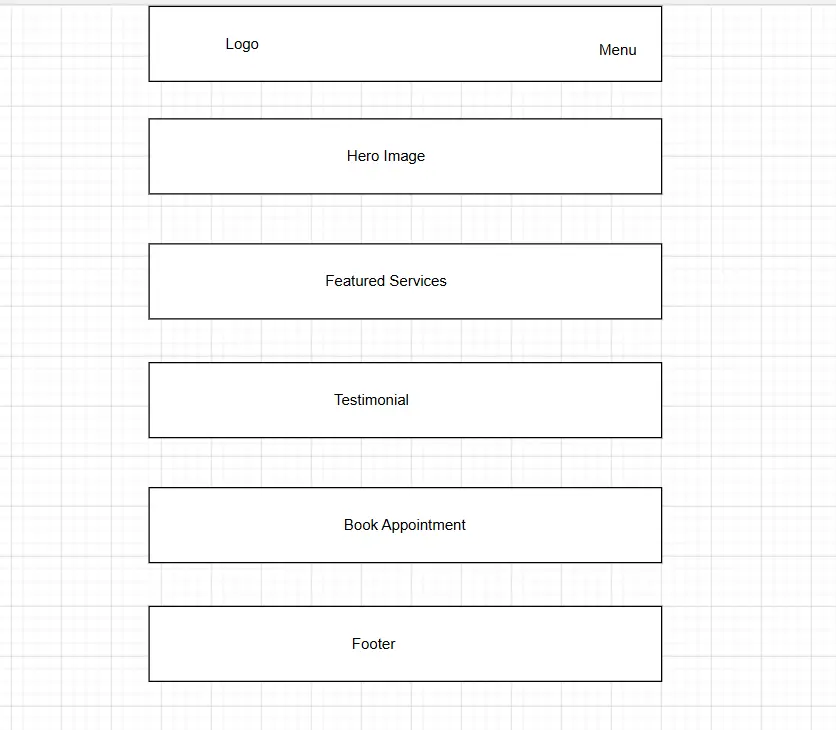
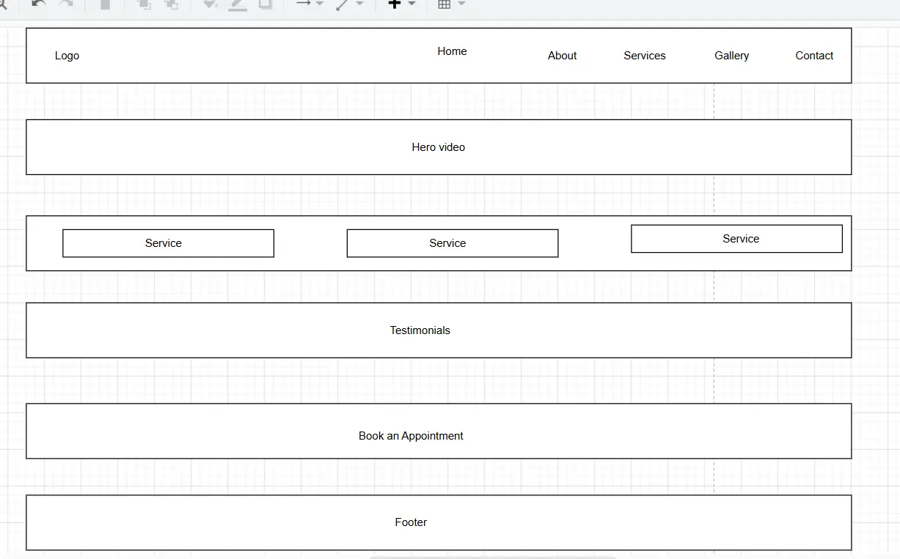

Home — index.html
The home page will introduce Billy Aura Wellness Studio with a hero section, short introduction, featured services, information about the studio, client experience, gallery preview, and a call-to-action for booking an appointment.
WDD 231 Individual Website Project Site Plan
The name of my website is Billy Aura Wellness Studio.
I chose this name because the website is for a beauty and wellness studio. The word "Aura" represents beauty, confidence, relaxation, and feeling good about yourself. The name is simple, easy to remember, and represents the type of services offered by the studio.
Proposed domain: billyaurawellness.com
The purpose of the Billy Aura Wellness Studio website is to introduce the studio and provide visitors with information about its beauty and wellness services.
Visitors will be able to explore services such as massage, facials, manicure and pedicure, gel nails, waxing, and eyelash treatments. The website will also provide information about the studio, examples of previous work, client experiences, contact information, and an appointment form.
The main goal of the website is to make it easy for visitors to understand the available services and contact the studio when they would like to make an appointment.
The WDD 231 project will contain three main website pages. Additional pages required for the form response and resource attributions will not count toward the three-page requirement.
The home page will introduce Billy Aura Wellness Studio with a hero section, short introduction, featured services, information about the studio, client experience, gallery preview, and a call-to-action for booking an appointment.
This page will contain the main service directory. Service information will be loaded dynamically from a local JSON data source using the Fetch API. At least fifteen services will be displayed dynamically.
Each service will contain several properties such as name, category, description, price, duration, and image. Visitors will also be able to interact with service cards and open a modal containing additional information.
The contact page will contain studio contact information, opening hours, location information, and an appointment request form.
Visitors will be able to enter their name, email, selected service, preferred appointment information, and message.
The website will use a consistent header, navigation, main content area, and footer across all three pages.
I chose warm neutral colours because they create a calm, elegant, relaxing, and professional atmosphere that fits the beauty and wellness theme of the studio.
| Color | HEX Value | Purpose |
|---|---|---|
| Background | #F9F6F1 | Main page background and large content areas |
| Section Background | #F8F1E3 | Services, contact, and supporting sections |
| Primary | #3B312C | Main text, buttons, footer, and important elements |
| Secondary | #5F544D | Headings, supporting text, and secondary information |
| Accent | #F2C683 | Buttons, links, borders, highlights, and details |
| Brown Accent | #8B5E4A | Hover effects and interactive elements |
| Muted | #F3EEE4 | Cards, team information, and supporting sections |
| Border | #D8CFC1 | Borders, dividers, and outlines |
| White | #FFFFFF | Text and elements displayed on dark backgrounds |
The primary font for the website will be Poppins. It will be used for body text, navigation, buttons, forms, service information, and most other content.
Poppins was selected because it is clean, modern, and easy to read. It also works well with the beauty and wellness style of the website.
Playfair Display will be used for selected large headings and branding elements. This will create contrast between the modern body text and the more elegant studio branding.
Font sizes, spacing, weight, and line height will be used to create a clear visual hierarchy and make important information easy to identify.
I will create wireframes for the home page showing the structure and placement of the main content before applying the final colors, images, and detailed styling.


The website will be responsive and designed to work on mobile, tablet, and desktop screens, including a minimum mobile width of approximately 320 pixels.
CSS Grid and Flexbox will be used to create flexible layouts. Larger screens will use multiple columns where appropriate, while smaller screens will use single-column layouts.
The navigation will change on smaller screens to use a hamburger menu. Images will be responsive and will maintain their intrinsic aspect ratios without causing horizontal scrolling.
JavaScript will be used to provide dynamic content and interactive features throughout the website.
The services page will retrieve service information from a local JSON file using the Fetch API. The asynchronous request will use async/await and a try...catch block to handle possible errors.
At least fifteen service items will be stored in the JSON data source and generated dynamically with JavaScript. Each service will contain at least four data properties, including information such as the service name, category, description, price, duration, and image.
JavaScript array methods such as forEach() and filter() will be used to process and display service data.
Template literals will be used to create dynamic HTML content for service cards and modal information.
Local storage will be used to save a user's selected service or preference so that the information can remain available when the user returns to the website.
A modal dialog will allow visitors to select a service and view additional details without leaving the services page. The modal will include an accessible close button and appropriate labels.
JavaScript will use DOM methods such as querySelector() and querySelectorAll() to select and update elements. Event listeners will be used for navigation, filtering, modal interactions, form interactions, and other user actions.
JavaScript will be organized into separate ES module files to keep the code organized and demonstrate proper JavaScript development practices.
The contact page will contain an appointment request form. Visitors will be able to enter their name, email address, selected service, preferred appointment information, and message.
The form will use properly associated labels and appropriate input types. Required fields and basic HTML validation will be used to improve usability.
The submitted form information will be displayed on a separate form-action.html page. This page does not count toward the three required website pages.
I will use semantic HTML elements such as header, nav, main, section, article, form, and footer to create a clear document structure.
Images will have descriptive alternative text, and decorative images will be handled appropriately.
Form fields will have visible labels and appropriate input types. Buttons and links will use meaningful text.
I will maintain sufficient color contrast and make sure interactive elements can be accessed using the keyboard.
The responsive design will support different screen sizes without horizontal scrolling.
Images will be optimized for web use and stored using appropriate dimensions and modern formats such as WebP where possible.
Images that are not immediately visible will use lazy loading. Images will include width and height attributes where appropriate to help prevent layout shifts.
I will monitor the size of each page and optimize images and other resources so that each page remains below the required 500 kB page weight target where possible.
Each of the three main pages will have a unique and descriptive title and meta description.
Each page will also contain an author meta tag and appropriate Open Graph metadata for social sharing.
The website will use meaningful headings, descriptive image alternative text, semantic HTML, and relevant content to support search engine optimization.
I will proofread the website carefully to correct spelling, grammar, and content errors before submission.
If I use external images, icons, fonts, information, or other resources, I will acknowledge the sources on an attributions.html page.
The attributions page will be linked from the footer of the home page and will not count toward the three-page requirement.
I will create a focused 3–5 minute video demonstration showing how the JavaScript requirements were implemented.
The video will demonstrate the data fetching process, the asynchronous functionality and try...catch error handling, and the dynamic display of the service data.
My face will be visible while recording the screen, and the video will be uploaded to YouTube, Loom, or another publicly accessible video service.
A link to the video will be included in the footer of each main page so that the graders can easily access it.
I will test the website using the W3C Markup Validator to check the HTML and identify markup errors.
I will use accessibility testing tools such as WAVE and browser developer tools to identify accessibility issues and check color contrast.
I will use Lighthouse to test performance, accessibility, best practices, and SEO in both mobile and desktop views.
I will also test the website at different screen sizes and in multiple browsers to make sure the navigation, forms, images, JavaScript features, and responsive layout work correctly.
Browser DevTools will also be used to check for JavaScript runtime errors and other development issues.
Billy Aura Wellness Studio will be a professional beauty and wellness website designed to help visitors discover services, learn about the studio, view examples of the work, and request an appointment.
The website will use a warm and relaxing visual style while maintaining a clean, accessible, responsive, and easy-to-use interface.
The project will demonstrate my ability to use HTML, CSS, and JavaScript to create a dynamic website. It will also demonstrate Fetch API data retrieval, JSON data, dynamic content generation, local storage, modal interaction, DOM manipulation, event handling, array methods, template literals, and ES modules.
This site plan will guide the development of the project and help me maintain a consistent design and structure throughout the website.